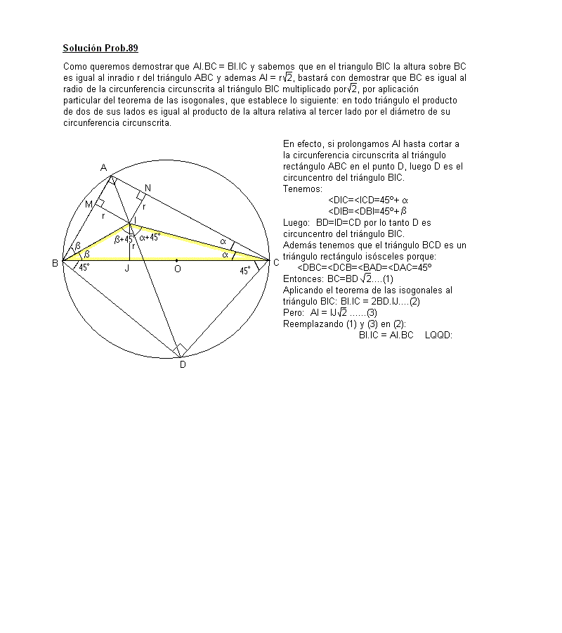

Demostrar que en un triángulo BAC, rectángulo en A, el producto de las distancias del centro I del círculo inscrito a los vértices B y C, es igual al producto de la hipotenusa BC por la distancia de I al vértice del ángulo recto.
Revista de Matemática Elemental,N.39 ( 4ª Serie) 1941, Tomo I, (p. 156-157,)
Solución de Juan Carlos Salazar, Profesor de Geometría del Equipo
Olímpico de Venezuela.(Puerto Ordaz)
